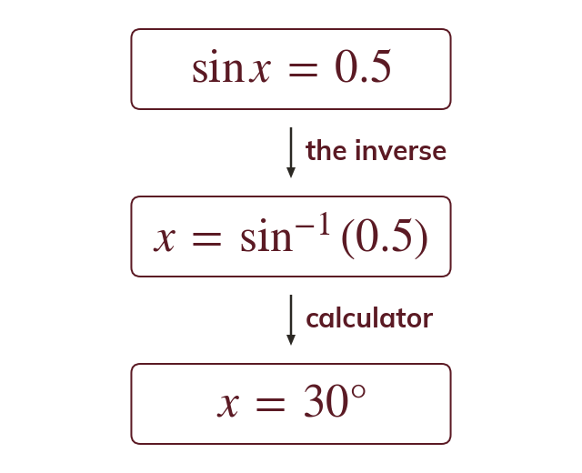
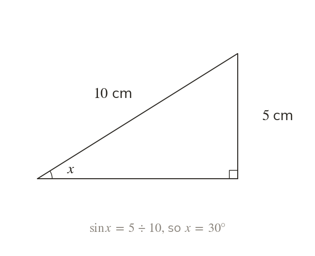
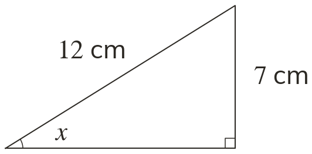
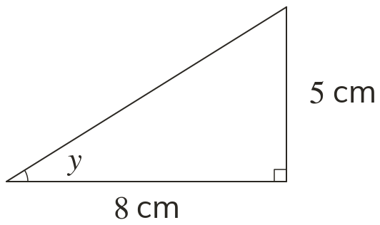
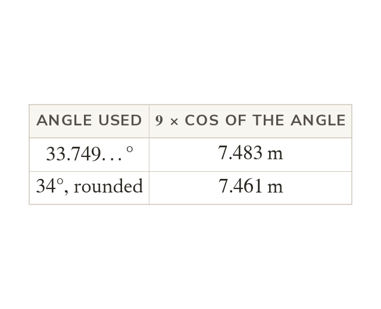
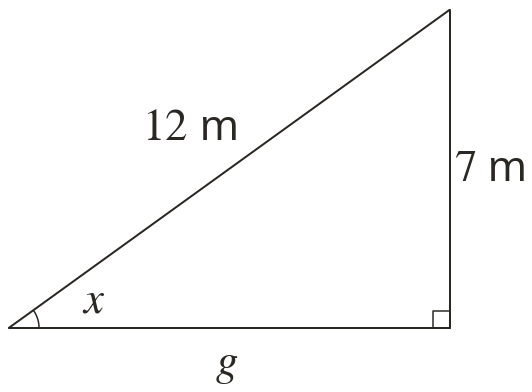
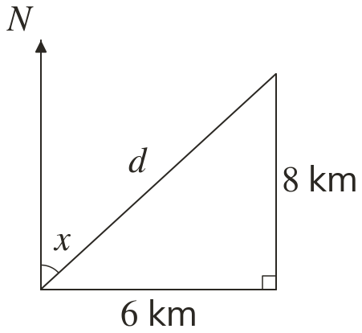

The inverse undoes the ratio
To find an angle from a ratio, use the inverse: sin⁻¹, cos⁻¹ or tan⁻¹
If then
When a ratio is known, the angle is found with the inverse function, written sin⁻¹, cos⁻¹ or tan⁻¹
If then
If then
When two sides are known, trigonometry can also find an angle, such as the slope of a ramp or a roof. Today we run the ratio backwards.
Work down the page at your own pace. Write every answer in your book first, then click to check it.
Read each card, then follow the worked examples one step at a time.

To find an angle from a ratio, use the inverse: sin⁻¹, cos⁻¹ or tan⁻¹
If then

With two sides known, their ratio is worked out first. The inverse function then turns that ratio into the angle.


Pick an answer. If it's wrong, the feedback tells you which mistake it was.
Read each card, then follow the worked examples one step at a time.
Some problems need an angle and then a length, found one after the other. The angle found first is used in the second ratio.

Rounding the angle before the second step can change the final answer. The calculator keeps the full value, so that is the one used again.


Pick an answer. If it's wrong, the feedback tells you which mistake it was.
Finished? Next lesson: 10.19.4 Choosing Pythagoras or Trigonometry.
Log in, then search for a code to practise that skill.